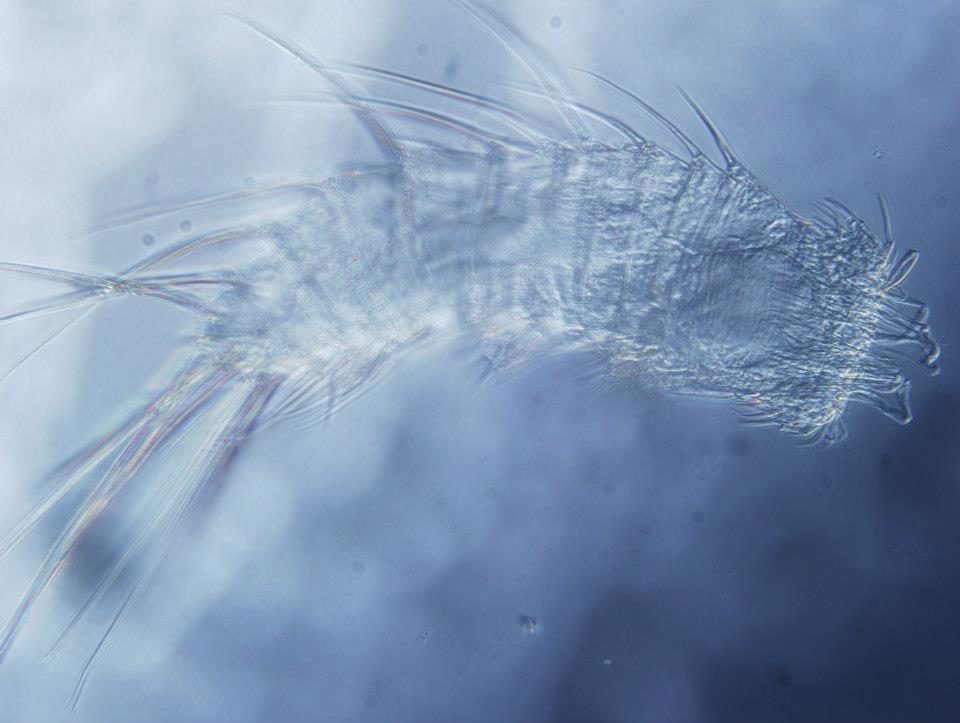

This was a short project in collaboration with Francisco Sedano and Free Espinosa from the University of Seville, conducted during my last year of bachelor. We studied how the differences in sediment granulometry and depth affect the composition of the meiofaunal community in the inter/subtidal area, in order to later compare protected and anthropized areas.
Meiofauna is composed by small animals, ranging from 42 to 500 μm, that live in between the grains of sediment (sand, mud, etc.) in aquatic environments (from beaches to freshwater to deep sea). Twenty out of the thirty-four animal phyla have representatives in meiofauna, and five of them (Kinorhyncha, Gastrotricha, Loricifera, Priapulida and Gnathostomulida) are exclusive from it. Given the difficulty of studying them, due to the small body size or complicated sampling, some of the meiofaunal gruops are vastly understudied. We studied how the proportion of the different taxonomic groups changes from coarse to fine sediment, and from 5 m to 15 m deep.
Most of the organisms present in the meiofauna community spend most part, if not the entirety, of their life cycle in the sediment. Some feed on bacteria or microalgae (e.g. kinorhynchs), while other are predators (e.g. tardigrades or nematodes) of their coinhabitants. Either way, they represent an excelent instrument to scrutinize the changes that undergo in an environment due to human pressure. We compared the meiofaunal community of an underwater nature reserve and a nearby marina, along with analysis of usual organic and inorganic pollutants.
People involved in this project: